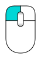
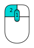

Contents
Какво Ново
- Version 0.11 Release notes : Вижте какво ново в версия 0.11 на FreeCAD
- Version 0.12 Release notes : Вижте какво ново в версия 0.12 на FreeCAD
- Version 0.13 Release notes : Вижте какво ново в версия 0.13 на FreeCAD
- Version 0.14 Release notes : Вижте какво ново в версия 0.14 на FreeCAD
- Version 0.15 Release notes : Вижте какво ново в версия 0.15 на FreeCAD
- Version 0.16 Release notes : Вижте какво ново в версия 0.16 на FreeCAD
Увод
FreeCAD е 3D CAD/CAE програма за параметрично моделиране. Основно е предназначена за механичен дизайн но има приложение и във всички други области изискващи точно моделиране на 3D обекти.
FreeCAD е все още в ранен стадии на своето развитие. Макар и вече да предоставя много възможности, все още много елементи липсват, особенно в сравнение с някои платени продукти. Може все още да не е достатъчно развита за използване в продукция. FreeCAD има бързо растящо общество of потребители и вече може да намерите много примери на качествени проекти разработени с FreeCAD.
Както всички проекти с отворен код, FreeCAD не е просто едноседмичен проект доставен веднъж от неговите автори. Програмата разчита на активното общество от потребители и програмисти за да расте, добавя нови възможности и да се стабилизира (тоест да се оправят бъгове). Моля не забравяйте че след като започнете да използвате FreeCAD, ако го харесвате, може директно да участвате в неговото развитие.
Инсталация
Първо (ако все още не сте го направили) свалете и инсталирайте FreeCAD. Вижте страницата Download за линкове за сваляне на последната версия, и страницата Инсталация за информация как да инсталирате FreeCAD. Има готови инсталатори заWindows (.msi), Ubuntu и Debian (.deb) openSUSE (.rpm) и Mac OSX. Тъй като FreeCAD е с отворен код, ако сте готови за приключение, може да видите (и работите върху) най-новите разработки в прогрмата като свалите сорс кода и сами компилирате FreeCAD.
Да Опознаем FreeCAD

- Прозореца 3D показва обекта върху които работите
- Прозореца "tree view" (дърво на обектите), показва йерархията и историята на конструиране на всички обекти в документа
- Прозореца properties editor, видите и промените свойствата на избраните в момента обекти
- В прозореца report (също наричан output window), which is where FreeCAD принтира съобщения и грешки
- В Конзолата на python се принтират всички python команди които се изпълняват от FreeCAD. Там също може да въведете и свой python код.
- Полето workbench selector, ви позволява да смените активния работен плот
Основната концепция в интерфейса на FreeCAD е разделението на различни работни плотове. Един Работен Плот е сбор от определни инструменти и туул-барове които ви позволяват да изпълните определна задача. Например работния плот meshes ви позволява да работите с меш-ове. Има работен плот за 2D обекти, за скици чрез ограничения и т.н. Може да сменяте настоящия работен плот с полето workbench selector (6). Може да променяте инструментите показани във всеки плот, да добавяте инструменти от други плотове, и дори да добавяте инструменти които сами сте създали (например макроси). Има и "пълен работен плот" в който са събрани наи-често използваните инструменти от други работни плотове.
Когато отворите FreeCAD за първи път, ше видите "началния център" (start center):

"Началния Център" ви позволява бързо да превключите в някой от наи-често използваните работни плотове, да отворите наскоро ползвани файлове, и да видите последните новини в света на FreeCAD. Може да смените работния плот който да се показва по подразбиране (вместо "началния център) в менюто preferences.
Навигация в тримерното пространство
FreeCAD има няколко различни режима за навигация с мишка който променят ефекта на мишката и върху обектите и върхи ориентацията в порстранството. Един от тези режими е специално направен за работа с тъч-падове (на лаптопи), където няма среден бутон на мишката.Следната талица описва режима по подразбиране CAD Navigation (може да смените сегашния режим на навигация с мишката като натиснете с десния бутон върху празно място в 3D прозореца):
| Избери | Премести екрана наляво/дясно/горе/долу | Промени мащаба (zoom) | Завърти гледната точка | Завърти гледната точка
Алтернативен начин |
|---|---|---|---|---|
|  | 
|

|
 | 
|
| Натиснете левия бутон на мишката върху обектът който искате да изберете. Задръжте Ctrl докато избирте за да изберете няколко обекта. | Натиснете и задръжте средния бутон на мишката (или колелото на мишката) и я движете за да придвижите и екрана | Използвайте колелото на мишката за уголемете или намалите мащаба. Натиснете средния бутон за да центрирате погледа върху курсора на мишката. | Натиснете първо средния бутон на мишката и го задръжте. След това натиснете левия бутон и го задръжте и движете мишката в желаната посока за ротация. Позицията на курсора когато натискате средния бутон определя къде е центъра на ротацията. Ротацията работи като въртене на топка около нейния център. Ако пуснете бутоните на мишката преди да спрете движението на мишката, обекта продължава да се върти след това (ако тази опция е активирана). Ако кликнете 2 пъти средния бутон на мишката докато обекта се върти се променя центъра на ротация. | Натиснете първо средния бутон на мишката и го задръжте. След това натиснете левия бутон и го задръжте и движете мишката в желаната посока за ротация. Този е почти идентичен на предишния начин за завъртане чрез дредниа бутон на мишката + левия бутон, с изключение на това че средния бутон може да бъде пуснат след като десния бутон е натиснат. Този начин може да е по-удобен на потребители които използват мишката с дясната си ръка. |

|
||||
| Натиснете и задръжте бутона Ctrl и кликнете с десния бутон на мишката за да влезете в режим движение на екрана (Pan) (версия 0.14) | Следкато влезете в режим движение на екрана (Pan), кликнете с левия бутон на мишката за да влезете в режим промяна на мащаба (Zoom). За да се върнете обрано в режим движение на екрана кликнете с десния бутон на мишката (версия 0.14) | Следкато влезете в режим движение на екрана (Pan), натиснете и моменто задръжте левия бутон на мишката за да влезете в режим промяна на мащаба (Zoom). За да се върнете обрано в режим движение на екрана кликнете с десния бутон на мишката (версия 0.14) |
{kind=link}
{kind=link}
{kind=link}
Имате няколко предифинирани погледа върху обектите (отгоре(top view), отпред(front view), и т.н) в менюто View и във View туулбарът (бутоните с кубовете с една попълнена стена). Може да изберете поглед върху обектите и с клавиатурни комбинации (1, 2, etc...). Също ако натиснете десния бутон на мишката върху обект или празно пространство ще имате избор на изглед или възможност да намерите на обект в дървото на обектите (Tree view).
Първи стъпки с FreeCAD
Силата на FreeCAD's е в точното моделиране на 3D обекти, точния контрол върху обектите (тоест възможността да се връщаме назад в историята от промените в модела, и да променяме всяко свойство на обектите), и в интеграцията с 3D принтери и CNC стругове позволяващо лесно автоматично построяване. Поради този си фокус FreeCAD е различен от други програми за 3D моделиране като например програми за създаване на анимационни филми (Blender, 3dmax, Maya). Първоначално научаването на програмата може да е трудно, особенно ако за първи път се захващате с 3D моделиране. Ако сте заседнали някъде, може да се обърнете към общността от потребители на форумът на FreeCAD.
Работния плот който ще използвате зависи от работата която искате да свършите: например за механически модели (или общо казано по-малки обекти), вероятно искате да използвате Плотът за дезайн на части. Ако ще работите само в двумерно пространство, тогава използвайте Draft Плотът. За скици с ограничения използвайте Плотът за скициране. Ако искате да правите БИМ, пуснете Плотът за архитектура. Ако искате да моелирате кораби, има специален работен плот за тази цел. Ако искате да работите със [[1]] използвайте работния плот за OpenSCAD.
Може да сменяте работните плотове по всяко време, и да променяте интерфейса на всеки работен плот, както и да добавяте нови инструменти във всеки плот.
Работа с работните пловоте за дезайн на елементи и скициране
Работния плот за дезайн на елементи е създаден специално за построяването на сложни обекти от прости форми (цилиндри, паралелепипети и т.н.). Обекта се построява като се добавят или изваждат части (наричаме ги "фийчъри" (features)) докато не получим това което искаме. Всички елементи (фийчъри) които използваме за да построим обекта можем да намерим в прозореца tree view организирани като дърво. В този прозорец се намират и всички други обекти в нашия документ. Може да мислите за обекта моделиран по този начин като редица операции, всяка приложена към резултата от предишната. В прозореца tree view виждате финалния обект организиран като дърво където последната операция е в корена, а предишните операции са деца на корена. Можете да отворите всяко под-дърво на финалния обект, за да видите по-ранни версии на обекта (или казано по друг начин - подобектите от които той е съставен). Може да променяте параметрите на всеки под-обект, и това автоматично ще се отрази на целия обект.
Работния плот за дезайн на елемент често използва и друг работен плот - плотът за скициране с ограничения. Плотът за скициране с ограничения позволява да чертаете двумерни фигури, които се дефинират като се приложи ограничение върху проста(и) 2D форма(и). Например, можете да нарисувате правоугулник, и можете да определите дължината на страната му като приложите ограничението за дължина върху тази страна. След като сложите това ограничение, тази страна на правоъгълника не може повече да се променя, докото не промените или махнете ограничението което сте добавили.
2D формите нарисувани в плота за скициране с ограничения се използват често в плота за дизайн на елементи. Например, за да създадете 3D обем, или за да изрежете дупка в страната на 3D обекта върху които работите. Ето типичния работен процес за дизайн на елемент:
- Отваряте двумерна скица (тоест влизате в работния плот за скициране с ограничения)
- В двумерната скица създавате затворена двумерна форма
- Затваряте двумерната скица (тоест връщате се в работния плот за дизайн на елемент)
- Издигате скицата в плътен 3D обект използвайки инструмента pad
- Избирате едно от лицата на новопостроения 3D обект
- Създавате нова скица (този път върху избраното лице)
- Чертаете нова 2D затворена фигура
- Затваряте скицата
- Създавате дупка (pocket) във обекта, със формата на втората скица
Би трябвало да получите обект подобен на този:
{kind=link}
Във всеки един момент може да изберете и промените оригиналната скица, или височината на издигнатия елемент(pad extrusion parameters), или дълбочината на дупката която сте създали. Вашите промени веднага ще бъдат отразени върху крайния обект.
Работния плот Draft и Архитектурния работен плот(Arch)
Работните плотове Draft и Архитектура са по-различни от гореописаните работни плотове, макар и да следват някои от същите общи правила. На кратко, докато Плотовете за Скициране с Ограничения, и за дизайн на елементи да са основно за работа върху един елемент, плотовете Draft и Архитектура се използват за работа с няколко по-малки обекти.
Плотът Draft предлага 2D инструменти подобни на по-традиционните 2D програми като AutoCAD. Тъй като стандартното 2D чертане не е основния фокус на FreeCAD, в него няма да намерите всички инструменти които има в програми специално за тази цел (като AutoCAD). Повечето инструменти в плота Draft работят не само в 2D равнини но и в 3D пространството и могат да бъдат интегрирани със помощни системи като Work planes и object snapping.
Архитектурния работен плот добавя BIM инструменти към FreeCAD, които ви разрешават да създавате архитектурни модели с параметрични обекти. Архитектурния плит изпозва плотове като Draft и Скициране с ограничения. Всички инструменти от Draft плота например са достъпни и в Архиткетурния плот. Повечето инструменти в Архитектурния полт използват части от Draft модула за своята работа.
Ето пример за типичен работен процес в Архитектурния/Draft работни плотове:
- Начертайте няколко линии с инструмента Draft Line
- Изберете всяка линия и натиснете върху инструмента Wall за да построите стена върху всяка от тях
- Съединете стените като ги изберете и натиснтете инструмента Arch Add
- Създайте подов обект (floor object) и преместете стените във него във прозореца Tree view
- Съзадайте обект "сграда" (building object) и преместете подовия обект в него във прозореца Tree view
- Създайте прозорец като натистнете върху инструмента Window tool, изберете запеметен тип на прозорец, и натиснете върху лицето на стена в която да се постави прозореца
- Изберете измерения като първи изберете работната равнина (ако е нужно) и след това използвате инструмента Draft Dimension
Би трябвало да получите нещо подобно на следния обект:

За повече информация вижте страницата Tutorials/bg.
Скриптиране
Накрая, една от най-гъвкавите способности на FreeCAD е неговата среда за скриптиране. От вградената конзола за python (или от външен Python скрипт), вие имате достъп до почти всяка част на FreeCAD. Може да създавате или модифицирате геометрични обекти, как тази обекти се представят в 3D сцена или дори да използвате и променяте интерфейса на FreeCAD. Python скриптове се използват иза писането на макроси, които дават лесен начин за писане на нови команди и инструменти.